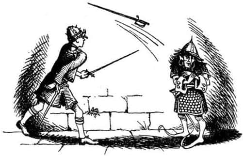

Ada Nasıl Terk Edildi?
“Ve böylece” dedi Yaygaracı (çünkü anlaşılacağı üzere, bu hikâyeyi Cair Paravel’in harap olmuş salonundaki çimler üzerinde oturan dört çocuğa anlatan oydu) – “ve böylece, cebime bir iki lokma ekmek koydum, hançerim dışında yanıma hiçbir silah almadan sabahın alacakaranlığında yola çıktım. Hayatım boyunca benzerini işitmediğim bir ses duyduğumda yürümeye başlayalı saatler olmuştu. Eh, bunu asla unutmayacağım. Ses her tarafı kaplamıştı. Gökgürültüsü gibiydi, ama daha uzun sürmüştü. Suyun akışı gibi yumuşak ve tatlı, aynı zamanda ağaçları sarsacak kadar güçlüydü. O an kendi kendime, ‘Eğer bu, boru değilse bana da tavşan desinler’ dedim. Ve sonra borunun neden daha önce çalınmadığını merak etmeye başladım—”
“Saat kaçtı?” diye sordu Edmund.
“Dokuz ile on arasıydı” dedi Yaygaracı.
“Tam bizim tren istasyonunda olduğumuz zaman!” dedi çocuklar hep bir ağızdan ve parıltılı gözlerle birbirlerine baktılar.
“Lütfen devam et” dedi Lucy.
“Eh, dediğim gibi, merak ediyordum, elimden geldiği kadar hızlı koşuyordum. Bütün gece koştum – sonunda bu sabaha karşı, sanki bir dev kadar akılsızmışım gibi, nehrin büyük bir kavisini kısa yoldan kat etmek için açık bir alandan geçme riskini göze aldım ve yakalandım. Miraz’ın ordusuna değil, sahil yakınlarında bir sınır kalesi vardır, o kaleye komuta eden Miraz yanlısı yaşlı ve gururlu bir aptala yakalandım. Size, benden gerçek hikâyeyi öğrenemediklerini söylememe gerek yok. Başka birisi olsa beni hemen oracıkta öldürürdü. Ne de olsa ben bir cüceydim ve bu yeterliydi. Heyhat, ıstakozlar ve lolipoplar! Derebeyinin gururlu bir aptal olması işime yaradı. Beni törensel bir şekilde ‘hayaletlere’ göndermek istedi. Sonrasını biliyorsunuz; bu genç bayan (başıyla Susan’ı işaret etti) bir okçuluk numarası yaptı – harika bir atış olduğunu söylemeliyim – ve işte beraberiz. Silahım da yok; onu aldıklarını tahmin edersiniz.” Piposunu vurarak temizledi ve yeniden doldurdu.
“Ulu Tanrım!” dedi Peter. “Öyleyse dün sabah bizi perondaki banktan buraya sürükleyen şey boruydu, senin borun Su! İnanmak çok zor, ama her şey bunu gösteriyor.”
“Eğer büyüye inanıyorsan, inanmayanı anlaman zordur” dedi Lucy. “İnsanların büyü yoluyla bir yerden – bir dünyadan – başka bir yere gittiğini anlatan birçok hikâye yok mudur? Demek istediğim, Binbir Gece Masalları’ndaki bir büyücü cini çağırdığında, cin gelmek zorundadır. Biz de aynen onun gibi, gelmek zorundaydık.”
“Evet” dedi Peter, “sanırım bunu böylesine tuhaf gösteren şey, hikâyelerde çağıranın daima bizim dünyamızdan biri olması. İnsan, cinin nereden geldiğini asla düşünmüyor.”
“Ayrıca şimdi biz cinin neler hissettiğini de biliyoruz” dedi Edmund kıkırdayarak. “Bizim böyle çağrılabileceğimizi bilmek biraz rahatsız edici. Babamın, ‘telefonun insafına kalmış’ dediği şeyden daha da kötü.”
“Ama burada olmayı biz kendimiz istiyoruz, değil mi” dedi Lucy, “eğer Aslan böyle buyurduysa—”
“Bu arada” dedi Cüce, “ne yapmamız gerekiyor? Sanırım geri dönüp Kral Caspian’a yardım gelmediğini söylesem iyi olur.”
“Yardım gelmedi mi?” dedi Susan. “Geldi ya işte. Buradayız.”
“Ya – evet eminim. Görüyorum” dedi piposu tıkanmış gibi görünen Cüce (her nedense pipoyu temizlemekle daha çok ilgileniyordu). “Yine de – şeyy – demek istiyorum ki—”
“Hâlâ bizim kim olduğumuzu anlamadın mı?” diye bağırdı Lucy. “Aptalsın sen.”
“Sanırım eski hikâyelerde adı geçen dört çocuk sizsiniz” dedi Yaygaracı. “Sizinle tanıştığıma çok memnun oldum elbette. Ayrıca bunun ilginç olduğuna da kuşku yok. Fakat eğer alınmazsanız—” yeniden duraksadı.
“Devam et. Ne söyleyeceksen söyle” dedi Edmund.
“Eh, benden günah gitti, hiç alınmayın” dedi Yaygaracı. “Artık sizin de bildiğiniz gibi Kral, Mantarsever, Doktor Cornelius… eh, bilmem anlatabiliyor muyum, yardım bekliyorlardı. Başka bir deyişle, sizlerin muhteşem birer savaşçı olduğunuzu düşünüyorlardı. Oysa – biz çocuklardan çok hoşlanırız filan, ama şu anda savaşın ortasında – eminim anladınız.”
“İşe yaramayacağımızı düşündüğünü söylemek istiyorsun” dedi Edmund yüzü kızararak.
“Şimdi, lütfen alınmayın” diye sözünü kesti Cüce. “Benim sevgili küçük dostlarım, size söz veririm ki…”
“Senden küçük lafını işitmek biraz garip kaçıyor” dedi Edmund sıçrayarak. “Sanırım Beruna Savaşı’nı kazandığımıza inanmıyorsun. Benim hakkımda ne istersen söyleyebilirsin, ama biliyorum ki…”
“Soğukkanlılığımızı kaybetmenin yararı yok” dedi Peter. “Ona hazine odasından yeni bir zırh verelim, biz de silahlarımızı kuşanalım ve ondan sonra konuşalım.”
“Ne yapmak istediğini tam anlamış değilim” diye söze girdi Edmund, ancak Lucy hemen onun kulağına, “Peter’in dediğini yapsak iyi olmaz mı?” diye fısıldadı. “Biliyorsun o Yüce Kral. Sanıyorum bir planı var.” İkna olan Edmund’un fenerinin yardımıyla hep beraber – Yaygaracı da dahil – merdivenlerden, toz altındaki muhteşem hazine odasının karanlık soğuğuna indiler.
Rafların üzerinde duran serveti görünce gözleri parlayan cüce (onları görmek için parmaklarının ucunda yükselmek zorunda kalmasına rağmen) kendi kendine mırıldandı, “Nikabrik bunları asla görmemeli, asla.” Cüceye uygun büyüklükte zincirli bir zırh, bir kılıç, miğfer, kalkan, yay ve bir sadak dolusu ok bulmakta zorlanmadılar. Bakırdan yapılmış miğfer yakut kakmalı, kılıcın kabzası altın işlemeliydi. Yaygaracı, kullanmak şöyle dursun, ömründe bu kadar çok mücevher görmemişti. Çocuklar da zırhlarını ve miğferlerini giydiler. Edmund’a bir kılıç ve kalkan, Lucy’ye de bir yay buldular – Peter ve Susan’ın hediyeleri üzerlerindeydi. Zırh şakırtılarıyla merdivenlerden yukarı çıkarken okul çocuklarından çok birer Narnialı gibi görünüyor, kendilerini öyle hissediyorlardı. İki oğlan arkadan yürüyor, anlaşıldığı kadarıyla plan yapıyorlardı. Lucy, Edmund’un, “Hayır, ben yapayım. Kazanırsam onun için çok daha aşağılayıcı olur. Yok eğer kaybedersem hepimiz için daha az aşağılayıcı olur” dediğini duydu.
“Tamam, Ed” dedi Peter.
Gün ışığına çıktıklarında Edmund, Cüce’ye dönerek çok nazik bir ifadeyle, “Sana bir şey sormak istiyorum” dedi. “Bizim gibi çocukların senin gibi büyük bir savaşçıyla karşılaşma şansı pek yoktur. Benimle bir eskrim maçı yapar mısın? Bu çok hoşuma gider.”
“Tamam delikanlı ama” dedi Yaygaracı, “bu kılıçlar keskin.”
“Biliyorum” dedi Edmund. “Merak etme, sana asla yaklaşmayacağım. Ayrıca, sana zarar vermeden kılıcımı düşürecek kadar da zekisin.”
“Bu tehlikeli bir oyun” dedi Yaygaracı. “Ama madem senin için çok önemli, bir-iki el deneyelim.”
Az sonra kılıçlar çekilmişti. Diğer üç çocuk kürsünün bir köşesine çekilip seyretmeye başladılar. Buna değmişti doğrusu. Sahnede gördüğünüz, kılıçlarla yapılan gülünç karşılaşmalara benzemiyordu. Mükemmele yakın örneklerini gördüğünüz eskrim karşılaşmaları gibi de değildi. Bu, gerçek bir kılıç dövüşüydü. Burada en önemli hamle düşmanın bacaklarını kesmeye çalışmaktır. Çünkü zırhla kaplı olmayan kısım bacaklardır. Düşman kılıcını salladığında siz yerden yukarı zıplamalısınız ki kılıç ayaklarınızın altından geçsin. Bu durum cüceye avantaj sağlamıştı. Edmund daha uzun boylu olduğu için sürekli eğilmek zorunda kalıyordu. Eğer Yaygaracı’yla yirmi dört saat önce dövüşseydi, herhalde Edmund’un hiç şansı olmazdı. Ancak adaya ulaştıklarından beri Narnia’nın havası onu etkisine almıştı. Tüm eski savaşları hatırlamış, kolları ve parmakları eski hünerini kazanmıştı. Kral olan Edmund’du. İki savaşçı bir daire etrafında durmaksızın dönüyor, darbe üstüne darbe indiriyorlardı birbirlerine. Susan (bu tür şeylerden hoşlanmayı hiçbir zaman öğrenememişti), “Ah, dikkatli ol” diye bağırıyordu. Sonra nasıl olduğunu kimsenin görmediği bir çabuklukla (eğer Peter kadar becerikli olsalardı, görürlerdi), Edmund son bir hamle yaptı ve kılıcını şimşek gibi salladı. Cücenin kılıcı elinden uçtu. Yaygaracı kılıcı düşüren elini tuttu. Kolu boşlukta, bir kriket sopasıyla topa vururken olduğu gibi sallanmıştı.

Kılıcını kınına sokarken, “Umarım yaralanmamışsındır, sevgili küçük dostum?” dedi Edmund, biraz soluyarak.
“Anlıyorum” dedi Yaygaracı kuru bir sesle. “Hiç görmediğim bir oyun biliyormuşsun.”
“İyi bildin” dedi Peter. “Dünyanın en iyi kılıç ustası, bilmediği bir oyunla silahından olabilir.
Sanırım Yaygaracı’ya başka bir şans daha tanımak adilce olur. Kız kardeşimle bir okçuluk yarışması yapar mısın? Biliyorsun okçulukta hile yoktur.”
“Ah, şakacısınız, çok şakacı” dedi Cüce. “Bu sabah olanlardan sonra, sanki onun nasıl ok attığını bilmezmişim gibi – şimdi anlıyorum. Fark etmez ama. Deneyelim bakalım.” Boğuk bir sesle konuşmuştu, ama gözleri parıldıyordu, çünkü halkı arasında çok ünlü bir okçuydu.
Beşi birden bahçeye çıktılar.
“Hedef ne olacak?” diye sordu Peter.
“Şuradaki duvarın üzerinden sarkan daldaki elma olabilir” dedi Susan.
“Evet iyi olur, küçük kız” dedi Yaygaracı. “Kemerin ortasına yakın olan sarı elmayı mı kastediyorsun?”
“Hayır, o değil” dedi Susan. Üstteki, kırmızı olanı, mazgalın üstündeki.”
Cücenin yüzü asıldı. Kimsenin duymayacağı bir sesle, “Elmadan çok kiraza benziyor” diye mırıldandı.
İlk atış için yazı tura attılar (bu, daha çok, bugüne kadar hiç yazı tura atıldığını görmemiş Yaygaracı içindi). Susan kaybetti. Salondan bahçeye inen merdivenlerin başından atış yapacaklardı. Herkes, Cüce’nin duruşundan, yayını tutuşundan yaptığı işi iyi bildiğini anlayabiliyordu.
Tınnnn sesi çıktı ipten. Mükemmel bir atıştı. Ok sıyırıp geçerken minik elma sallandı, bir yaprak titreşerek yere düştü. Sonra Susan merdivenlerin başına çıktı, yayını gerdi. Susan bu tür karşılaşmalardan Edmund kadar hoşlanmıyordu. Hoşnutsuzluğu elmayı vuramama kuşkusundan kaynaklanmıyordu. Öylesine yufka yürekli biriydi ki, az önce yenilmiş birini yenmekten nefret ediyordu. Yayını kulağının dibine kadar çekerken Cüce onu dikkatle izledi. Sonra bir anda bu sessiz yerde, hepsinin duyabildiği yumuşak bir çarpma sesiyle elma, Susan’ın okunun ucunda çimenlerin üzerine düştü.
“Oo, aferin Su” diye bağırdı diğer çocuklar.
“Aslında seninkinden daha iyi bir atış değildi” dedi Susan Cüce’ye. “Sen atarken biraz rüzgâr vardı.”
“Yoktu” dedi Yaygaracı. “Hiçbir şey söyleme bana. Yenilgiye bahane aramam ben. Kolumu iyice geriye çektiğimde son aldığım yaranın beni rahatsız etmesi bile mazeret olamaz—”
“Ah, yaralı mısın?” diye sordu Lucy. “Bakmama izin ver.”
“Küçük kızların bakmak isteyeceği bir görüntü değil” diye başladı Yaygaracı, ancak hemen toparlandı: “İşte yine bir aptal gibi konuşmaya başladım” dedi. “Erkek kardeşinin büyük bir kılıç ustası, kız kardeşinin büyük bir okçu olduğu gibi, sanırım sen de büyük bir hekimsindir.” Merdivenlere oturdu, zırhını çıkardı ve bir çocuğunkinden daha büyük olmamasına rağmen, bir denizcininki kadar kaslı ve kıllı kolunu açıkta bırakacak şekilde küçük gömleğini sıyırdı. Omzunda, beceriksizce yapılmış bir sargı vardı, Lucy onu çözmeye başladı. Sargının altındaki yara çok kötüydü, büyük bir şişkinlik vardı. “Ah, zavallı Yaygaracı” dedi Lucy, “ne kötü!” Sonra şişesindeki likörden, dikkatle, tek bir damla damlattı.
“Aman – ah! Ne yaptın?” dedi Yaygaracı. Gözlerini kıstı, başını çevirip sakalını geriye doğru topladı ama omzunu bütünüyle göremiyordu. Sonra, vücudunuzun erişemediğiniz bir yerini kaşımaya çalışırken yaptığınız gibi, kollarını ve parmaklarını zorlayarak, yarasına dokunmaya çalıştı. Daha sonra kolunu salladı, kaldırdı, kaslarını sınadı. En sonunda da ayağa sıçrayarak, “Devler ve ardıçlar! İyileşti! Eskisi kadar iyi” diye bağırdı. “Eh, bir cüceden beklenmeyecek kadar maskaralık yaptım. Alınmadınız umarım? Siz Majestelerinden ayrı ayrı, beni bağışlamanızı dilerim. Affedersiniz. Hayatımı kurtardınız, yaramı iyileştirdiniz, yemek verdiniz – dersimi de aldım, her şey için teşekkür ederim.”
Çocuklar, “Bir şey değil, lafı mı olur” diye karşılık verdi.
“Evet şimdi” dedi Peter, “Artık bize inanıyorsan—”
“İnanıyorum” dedi Cüce.
“Ne yapmamız gerektiği yeterince açık. Bir an önce Kral Caspian’a katılmalıyız.”
“Ne kadar acele edersek o kadar iyi” dedi Yaygaracı. “Aptallığım yüzünden bir saate yakın zaman kaybettik.”
“Oraya varmamız, senin geldiğin yoldan iki gün alır” dedi Peter. “Yani, bizim için. Siz cüceler gibi bütün gün ve bütün gece yürüyemeyiz biz.” Sonra diğerlerine döndü. “Yaygaracı’nın Aslan’ın Kümbeti dediği yer Taş Masa’nın ta kendisi. Hatırlarsınız, oradan Beruna Sığlıkları yarım gün çeker, belki daha da az—”
“Biz oraya Beruna Köprüsü deriz” dedi Yaygaracı.
“Bizim zamanımızda köprü yoktu” dedi Peter. “Evet, sonra Beruna’dan burası, bir günden fazla çekerdi. Normal bir yürüyüşle, ikinci gün çay saatinde eve ulaşırdık. Hızlı yürüdüğümüzde bütün yolu bir buçuk günde kat ederdik.”
“Şimdi oraların ormanlık olduğunu unutma” dedi Yaygaracı, “ayrıca sakınmamız gereken düşmanlar var.”
“Baksanıza” dedi Edmund, “sevgili küçük dostumuzun geldiği yoldan gitmek zorunda mıyız?”
“Majesteleri, eğer beni seviyorsanız, bu sözü bir daha duymak istemiyorum.” dedi Cüce.
“Pekâlâ” dedi Edmund. “S.K.D. diyeyim öyleyse.”
“Hadi Edmund” dedi Susan. “Onunla dalga geçip durma.”
“Fark etmez kızım – yani Majesteleri” dedi Yaygaracı kıkırdayarak, “Bir kıymık öldürmez insanı.” (Bundan sonra neredeyse anlamını unutana kadar, ona S.K.D. dediler.)
“Dediğim gibi” diye devam etti Edmund, “o yoldan gitmek zorunda değiliz. Neden Billursu Körfezi’ne ulaşana kadar sahil boyunca, güneye doğru kürek çekmeyelim ki? Bu yol bizi Taş Masa Tepesi’nin arkasına götürür. Hem denizde olduğumuz sürece güvende oluruz. Şimdi yola çıkarsak karanlık bastırmadan Billursu’nun ağzında oluruz. Birkaç saat uyuyup, yarın erkenden Caspian’a ulaşabiliriz.”
“Sahilleri tanımak güzel şey be” dedi Yaygaracı. “Hiçbirimiz Billursu hakkında bir şey bilmiyoruz.”
“Yiyecek işini nasıl halledeceğiz” diye sordu Susan.
“Elmalarla yetinmek zorundayız” dedi Lucy. “Haydi işe koyulalım. Yaklaşık iki gündür buradayız ve henüz bir şey yapmadık.”
“Bir daha şapkamı balık sepeti yerine kullanmanıza izin vermeyeceğim” dedi Edmund.
Yağmurluklardan birini torba olarak kullanıp içine kilolarca elma doldurdular. Sonra kuyudan kana kana su içtiler (çünkü derenin ağzına gelene kadar tatlı su bulma olanakları yoktu) ve kayığın yanına gittiler. Çocuklar, harabeye dönmüş olsa da evleri gibi hissettikleri Cair Paravel’i terk edeceklerine üzülüyorlardı.
“S.K.D. dümene geçse iyi olur” dedi Peter, “Ed ve ben kürek çekeceğiz. Ama bir dakika, zırhlarımızı çıkarmalıyız; işimiz bitene kadar çok terleyeceğiz. Kızlar teknenin başında durup S.K.D.’ye talimat verseler iyi olur, çünkü yolu bilmiyor. Adayı geçene kadar epeyce açıktan gitmeliyiz.” Biraz sonra arkalarında, küçük koylar ve burunlar kaybolmaya, adanın ormanlık sahilleri yeşil bir şerit halini almaya başlamıştı.
Kayık hafif dalgalarla yükselip alçalıyordu. Çevrelerini saran, sanki sonsuza kadar uzanan deniz, uzaklarda mavi, kayığın yakınlarındaysa yeşildi. Her yer iyot kokuyordu. Suyun şarıltısı, kayığın bordasına şap şap vuruşu, küreklerin şapırtısı, ıskarmozların gıcırtısı dışında hiçbir ses duyulmuyordu. Hava çok sıcaktı.
Kayığın baş tarafındaki Lucy ve Susan hayatlarından memnundu. Kenardan eğilip, bir türlü erişemedikleri suya dokunmaya çalışıyorlardı. Tertemiz denizin genel olarak açık renkli kumlarla kaplı ancak yer yer mor renkli yosun öbeklerinin yer aldığı dibi görülebiliyordu.
“Aynı eskisi gibi” dedi Lucy. “Terebinthia ve Galma, Yedi Adalar ve Issız Adalar’a yaptığımız yolculuğu hatırlıyor musun?”
“Evet” dedi Susan, “ve bastonunda kuğu başı olan, oymalı kuğu kanatları neredeyse beline kadar gelen büyük gemimiz Splendor Hyaline’ı.”
“İpek yelkenlerini ve kocaman kıç lambalarını.”
“Güvertedeki kokteylleri ve müzisyenleri.”
“Yukarıda, yelkenlerin arasında müzisyenlere flüt çaldırdığımız, flüt seslerini gökyüzünden gelen müzikmiş gibi dinlediğimiz zamanları hatırlıyor musun?”
Biraz sonra Susan, Edmund’un yerine küreğe geçti. Edmund, Lucy’yle beraber buruna geldi. Şimdi adayı geçmişlerdi. Terk edilmiş ormanlık sahile daha yakın seyrediyorlardı. Oraların bir zamanlar mutlu ve dost insanların yaşadığı çıplak, rüzgârlı yerler olduğunu hatırlamasalar, ormanın çok güzel olduğunu düşünebilirlerdi.
“Üf! Bu çok zor bir iş” dedi Peter.
“Ben de biraz kürek çekemez miyim?” dedi Lucy.
“Kürekler senin için çok büyük” diye kestirip attı Peter. Aksiliğinden değil, konuşmaya harcayacak gücü kalmadığı için öyle yapmıştı.